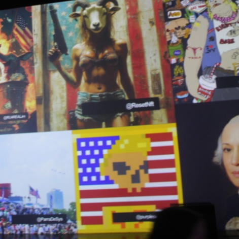
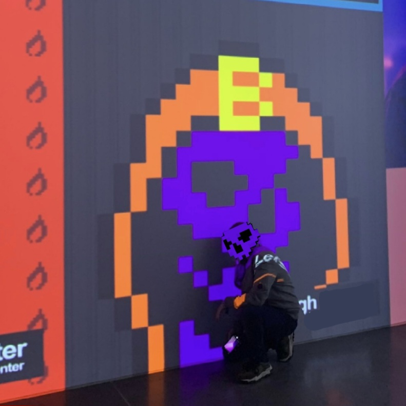

PurpleSkull began their artistic journey exploring digital art on Bitcoin, starting with Ordinals and the Bitcoin Stampchain. Previously a collector of digital art, PurpleSkull transitioned into creating their own pieces, combining a deep appreciation for crypto art with a background in formal art education. Their work has been showcased at Beeple Studios’ ELECTION NIGHT, the 1st PUNKS MEETUP, and NFT NYC, earning recognition for its distinctive style and creative vision. Today, PurpleSkull continues to push the boundaries of digital and blockchain-based art, producing collections that captivate and inspire.


⬅ Back to Home